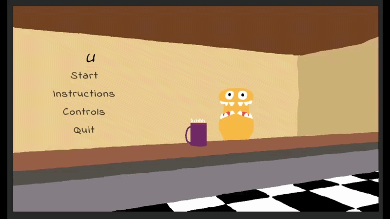

Unusual Grounds
A cozy horror café simulator where players prepare customized drinks for strange monster customers.
This was a completely solo project where I designed and implemented the gameplay systems, customer interactions, and progression mechanics.